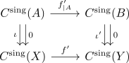
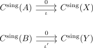

chain map of relative singular homology
Proposition
Let $(X,A), (Y,B)$ be pairs of spaces and $f: (X,A) \rightarrow (Y,B)$ a map of pairs. Then there exists a natural induced chain map
\begin{align*}
f': C^{\mathrm{sing}}(X)/ C^{\mathrm{sing}}(A) \rightarrow C^{\mathrm{sing}}(Y)/ C^{\mathrm{sing}}(B)
\end{align*}
where $C^{\mathrm{sing}}(X)/C^{\mathrm{sing}}(A)$ is the relative singular chain complex
Proof
Follows from the colim functor, where

is a natural transformation between the diagrams
